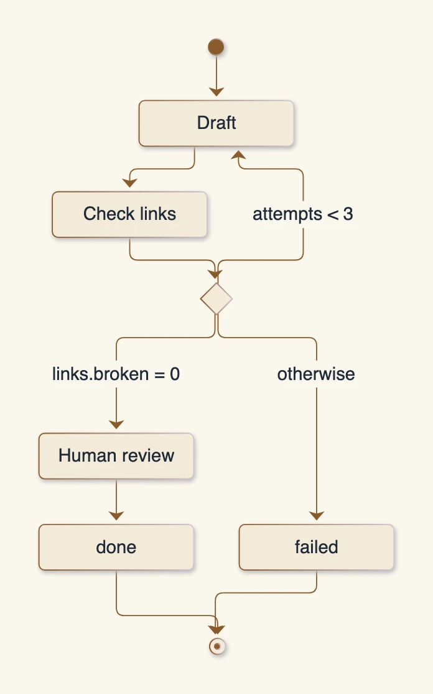

Camille maintains a small open source library. Every release ends the same way: draft the notes, check that no link is broken, ask a colleague to proofread. She would like an agent to take over the first two steps. What stops her is not the agent’s skill. It is the fear of a loop that never ends, or a branch nobody thought of, discovered on release night.
The idea in one picture
In AI-KIDO, a workflow is one readable file, .workflow.md. It holds a diagram, a plain description of each step, and a JSON block that stays the source of truth. Version 1.5.5 adds what was missing around it: tools that check the file step by step, without calling any model, before an agent ever runs it.
What Camille does: describe, then simulate
In her editor, she types the new command and answers its questions in her own words: the steps, who does each one, and how it ends.
- You/workflow-new Release notes: draft them from CHANGELOG.md, check every link, redo the draft if a link is broken (three tries at most), then a human review.
- AssistantDraft
release-notes1.0.0 written and validated.
Diagram: Draft → Check links → choice → Human review → done, with a way back to Draft while attempts < 3, otherwise failed.
Simulation: 6 paths, every state covered, nothing stuck. The test is complete: I can save it.
She opens the generated file. At the top, the diagram she would have drawn on a whiteboard; below, one short paragraph per step. She reads the workflow like a document, not like code.

.workflow.md, as Mermaid draws it in any Markdown viewer (VS Code, GitHub). Generated by aikido task workflow render with the 1.5.5 CLI; editing it and running sync updates the JSON block, and the reverse.What the simulation tells her
The test replaces every agent with a stub and walks through all the branches, up to the loop limit she set. Camille sees each path and how it ends: success after zero, one or two redrafts, or failure after three broken attempts. No state is left unvisited, and no path stays stuck.
- 6paths simulated for the release notes workflow
- 6/6states covered, none stuck
- 3visits at most per state, the loop bound set by maxAttempts
Under the hood, the summary she read comes from this report, shortened (the full one lists the six trails):
{"status":"ok","valid":true,"maxVisits":3,
"paths":[{"trail":["draft","links","links_ok","review","done"],"end":"success"}, …],
"covered":["draft","links","links_ok","review","done","failed"],
"uncovered":[],"terminals":["done","failed"],"complete":true}aikido task workflow test, @aikido-method/cli 1.5.5, on the workflow above (2026-11-24).Changing a step in one sentence
The next day, Camille wants anchors checked too. She says it in a sentence. The assistant turns it into a value proposal on one field, the prompt of the “Check links” step, and shows her the diff. Nothing is applied until she agrees, and the changed workflow is validated again.
Also in 1.5.5
- /aikido-reviewReviews a change against evidence and edits nothing. A finding is kept only with a concrete scenario, re-read lines and the smallest fix; findings are numbered and grouped as Blocking, Important and Minor.
- aikido depsReports outdated or nonexistent dependency versions. On Kimono v0.9.15 it read 223 dependencies across npm, Cargo, Docker and GitHub: 5 major, 13 minor and 13 patch updates available, 192 up to date.
- Task cardsNew commands to stop, delete and sync cards, explicit progress, numbered acceptance criteria and a human or automated review mode.
- The workflow/2 formatIt replaces workflow/1: a workflow saved in the old format must be saved again. Released as a patch, since no production store held workflow/1 data.
Scoring a workflow’s automated share and publishing it to a Tatami Core Agent go through /workflow-score and /workflow-publish, which need a configured Core Agent. Everything shown above runs with the CLI alone.
Try it
- Install or update the CLI:
npm install -g @aikido-method/cli@1.5.5, or follow the installation page. - In your assistant, type
/workflow-newand describe your steps, who does them and how it ends. - Read the diagram, check that the test is complete, then save. To run a change past a reviewer first, type
/aikido-review.
- AI-KIDO Changelog — version 1.5.5
- AI-KIDO aikido-workflow skill — 1.5.5
- AI-KIDO /aikido-review command — 1.5.5
- AI-KIDO aikido-deps skill — 1.5.5
- Kimono RAG MCP Repository at v0.9.15